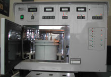
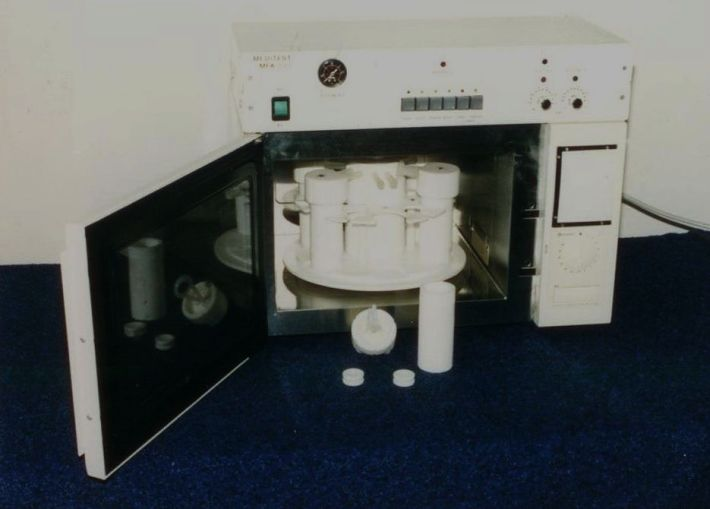

Meditest Kft. termékek

Mikrohullámú szövetbeágyazó készülék
Mikrohullámú szövetbeágyazó készülék
MFX-800/3A

Mikrohullámú feltáró készülék
Mikrohullámú feltáró készülék
DIG-MED

Mikrohullámú szárító készülék
MVM-6
E-mail címeink
Telefonszámaink
06 1 280-6513
06 30 650-5616